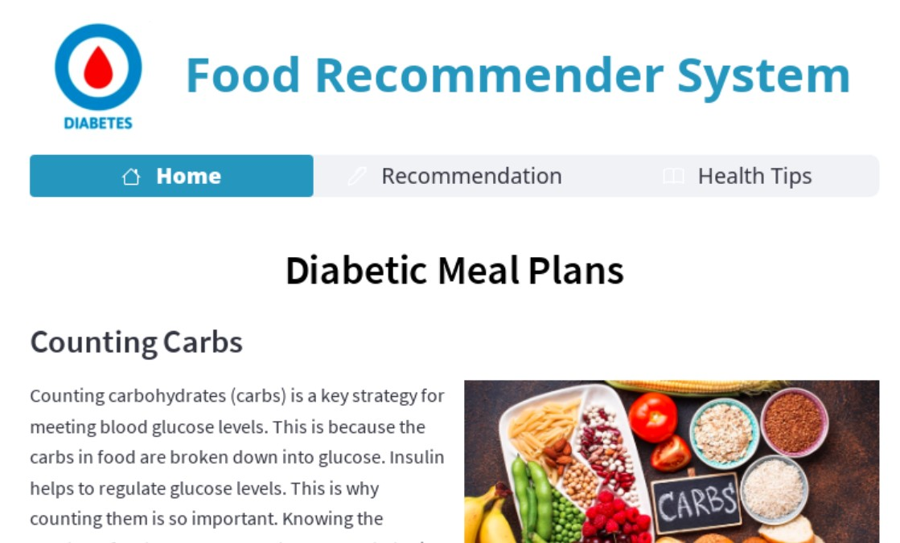
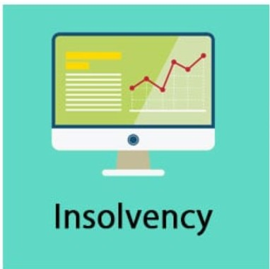

Transforming complex data into actionable insights and strategic solutions for financial institutions.
Results-driven and detail-oriented Data Analyst with over 3 years of experience at CreditInfo Credit Reference Bureau. Proficient in extracting, cleaning, and analysing data to provide actionable insights for clients.
Skilled in Python, Excel, Power BI, and logistic regression for scorecard creation. Experienced in designing lending strategies for financial institutions and creating compelling data visualizations and presentations.
Adept at translating complex data into meaningful business solutions that drive financial inclusion and improve lending outcomes.
Developed an end-to-end computer vision system that automatically detects and recognizes license plate numbers from vehicle images using object detection and character recognition techniques.

Machine learning system recommending low glycemic index meals for diabetic patients using XGBoost and clustering.

Clustered companies and individuals into financial risk categories using K-Means and Random Forest algorithms.
marynjerinjugunal@gmail.com
+254 797269136
Nairobi, Kenya